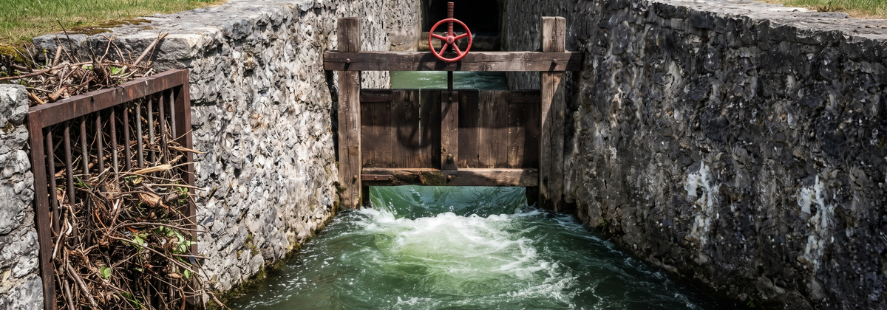

What it does
CSV input is read with the columns Source IP, Destination IP, Source Port, Destination Port, and Protocol, and the filters below match on those columns. PCAP input (-f pcap) is parsed into the same columns, plus Timestamp and Length. Both byte orders and both timestamp resolutions (microsecond and nanosecond) are read. Supported link types are Ethernet (including VLAN tagged frames), raw IP (link types 101 and 12), Linux cooked capture v1 and v2 (113 and 276), and loopback (0). IPv4 and IPv6 packets are decoded: source and destination addresses, protocol, and the TCP, UDP, or SCTP ports. Protocol is recorded as a name (TCP, UDP, ICMP, ICMPv6, IGMP, SCTP) or as the IP protocol number for anything else.

Parameters
| Parameter | What the README says |
|---|---|
-h | Show help message and exit |
-o | Path to the output report file. Defaults to stdout |
-f | Type of the input file: csv or pcap. PCAP captures are parsed as described above; a truncated or malformed capture exits 1 |
-ip | Filter traffic by a specific IP address |
-p | Filter traffic by a specific port number |
-proto | Filter traffic by a specific protocol (e.g., TCP, UDP) |
-n | Number of rows to process |
--src_ip | Filter by source IP |
--dst_ip | Filter by destination IP |
--src_port | Filter by source port |
--dst_port | Filter by destination port |
Stated limits
Packets that are not IP, such as ARP, are skipped and counted in the log. Other link types are not supported. A truncated or malformed capture is an error and the run exits 1; it is never reported as an empty result. The usage line names no input file argument: how the CSV or PCAP file itself is supplied is not spelled out in that line. Licence: the README closes with a copyright line and names no licence.